Die Registerkarte Skalierung
AxesRef-Scale
Diese Registerkarte verfügt über Bedienelemente für die Achsenskalierung, einschließlich Achsenskalierungsbereich, Achsentyp, große und kleine Hilfsstriche etc. In 2D-Diagrammen können Sie die vertikale und horizontale Richtung getrennt voneinander benutzerdefiniert anpassen; in 3D-Diagrammen gibt es drei anzupassende Achsen (X, Y und Z).
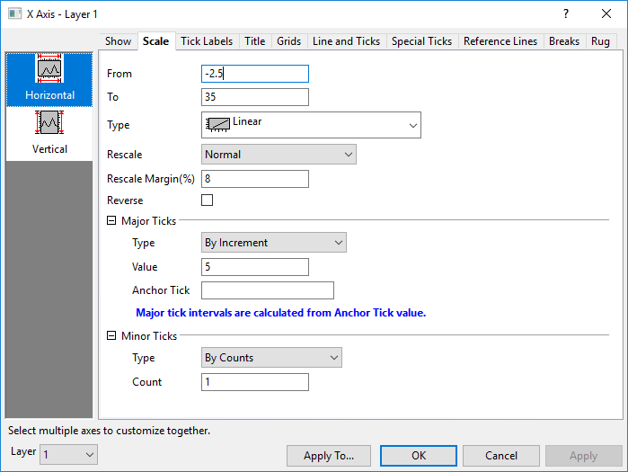
 |
Seit Origin 2023 gibt es, wenn Sie die rechte und die linke Y-Achse anzeigen und Jede Y-Achse unabhängig neu skalieren auf der Registerkarte Zeigen aktivieren, zwei getrennte vertikale Symbole Links und Rechts, mit denen Sie die linke und die rechte Y-Achsenskalierung separat benutzerdefiniert anpassen können.
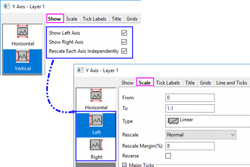
|
Layerauswahl
Bevor Sie die Skalierungselemente benutzerdefiniert anpassen, können Sie die Layerliste verwenden, um zwischen Layern in einem Diagramm mit mehreren Layern zu wechseln.

Von
Legen Sie den Anfangswert der Skala in diesem Textfeld fest.
Bis
Legen Sie den Endwert der Skala in diesem Textfeld fest.
Typ
Diese Auswahlliste wird ausgegraut, wenn sie für einen festgelegten Diagrammtyp nicht unterstützt wird. Zusätzlich sind einige der folgenden Optionen nicht für einige Diagrammtypen verfügbar.
| Linear |
Lineare Standardskalierung: X'=X. 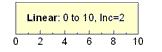 |
| Log10 |
Logarithmische Skalierung zur Basis 10: X'=log(X) 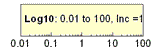 |
| Wahrscheinlichkeit |
Entspricht der Umkehrung einer kumulativen Gauss-Verteilung: X'=norminv(X/100). Beim Zeichnen einer kumulativen Gauss-Verteilung wird eine sigmoidal geformte Kurve erzeugt. Wird diese Kurve mit der Skalierung Wahrscheinlichkeit angezeigt, wird sie als Gerade angezeigt. Da Wahrscheinlichkeiten in Prozent ausgedrückt werden, müssen alle Werte zwischen 0 und 100 liegen. Der Skalierungsbereich der Wahrscheinlichkeit reicht von 0,0001 bis 99,999.
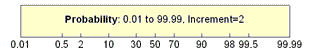
|
| Probit |
Wie bei der Wahrscheinlichkeitsskalierung wird eine sigmoidal geformte Kurve als Gerade gezeichnet. In diesem Fall ist die Skalierung allerdings linear und das Inkrement zwischen den Hilfsstrichen entspricht genau einer Standardabweichung. Der Wert "5" auf der Skala zeigt den Mittelwert oder eine Wahrscheinlichkeit von 50%. "6" entspricht einer Entfernung von einer Standardabweichung usw.
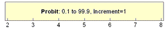
|
| Reziprok |
Reziproke Skalierung, wobei X'=1/X ist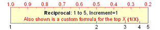 |
| Reziprok verschoben |
Reziprok verschobene Skalierung, wobei X'=1/(X+Verschiebung) Verschiebung ist definiert als 273,14, wobei 273,14 der absoluten Temperatur von 0 °C entspricht. 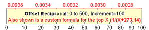 |
| Logit |
Logit=ln(Y/(100-Y)). Wie bei der Wahrscheinlichkeits- und Probitskalierung wird eine sigmoidal geformte Kurve als Gerade gezeichnet.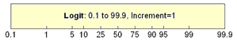 |
| ln |
Natürliche log-Skalierung (logarithmische Skalierung zur Basis e) 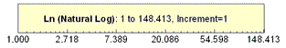 |
| log2 |
Logarithmische Skalierung zur Basis 2. 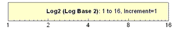 |
| Doppelt Log-Reziprok (Weibull) |
Doppelte logarithmische und reziproke Skalierung: X'=ln(-ln(1-X)) 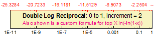 |
| Benutzerdefinierte Formel |
Benutzerdefinierte Achsenraum durch Direkte Formel und Inverse Formel
- Geben Sie eine Formel ein, um eine eindimensionale Raumtransformation für die Achse zu definieren.
- Geben Sie eine Formel ein, um eine eindimensionale Raumtransformation für die Achse zu definieren.
- Hinweis: Diese Formel muss die genaue Inverse der Direkten Formel sein. Der Wert Von dieser Achse kann den Bereich der Formel der Inversen nicht überschreiten.
Zwei Formel werden verwendet, die zur Darstellung der Variablen X verwenden. Zum Beispiel:
Direkte Formel: x*x-4
Inverse Formel: sqrt(x+4)
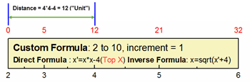
|
| Diskret |
Verwenden Sie die X-Werte der ersten Zeichnung in dem aktuellen Layer als Hilfsstrichsbeschriftungen. Dieser Skalierungstyp ist linear, außer das er X-Werte als Hilfsstrichsbeschriftungen verwendet und die zusätzlichen (wie Wochenenden und Feiertage in Finanzdiagrammen) entfernt. Wenn der Skalierungsbereich (festgelegt durch die Elemente Von und Bis) größer ist als der tatsächliche X-Datenbereich, wird der überschüssige Teil als lineare Skalierung entsprechend der Einstellungen von Großen und Kleinen Hilfsstrichen gezeigt.
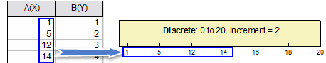
|
|
Ein Hinweis zu Log10-Skalen:
Die Hilfsstriche und Gitternetzlinien werden linear angezeigt, wenn nur eine Dekade sichtbar ist. Die LabTalk-Systemvariable @TL entscheidet durch folgende Relation, ob lineare Hilfsstriche verwendet werden:
10 * log10(max/min) <= Wert
Wenn Sie also für zwei Dekaden lineare Skalierung zulassen möchten, setzen Sie diese Variable auf 14. Dazu geben Sie dann also z.B. folgende Zeile ins Skriptfenster ein:
@TL = 14;
Der Standardwert von @TL ist 10.
|
Symmetrische Log-Skalierung
Diese Option wird gezeigt, wenn der Skalierungstyp Log10, Ln oder Log2 ist.
Allgemein unterstützt Origin nur positive Werte in Log10-, Ln- oder Log2-Skalierungen. Aktivieren Sie diese Option Symmetrische Log-Skalierung. Sie unterstützt positive und negative Werte auf der Log-Skalierung.
Wenn diese Option verfügbar ist, werden diese beiden Optionen Linearer Bereichsschwellenwert und Lineare Bereichslänge im Dialog gezeigt.
Linearer Bereichsschwellenwert
Es gibt keinen Nullwert im Log-Diagramm. Daher können Sie den Linearen Bereichsschwellenwert verwenden, um einen Wertebereich nahe Null zu definieren, innerhalb dessen die Zeichnung linear ist. Dadurch wird verhindert, dass die Zeichnung um Null ins Unendliche gehen muss.
Der Standardwert des Linearen Bereichsschwellenwerts ist 1.
Lineare Bereichslänge
Legen Sie das Verhältnis des Intervalls eines großen Hilfsstrichs der aktuellen Log-Skalierung fest. Der Standardwert ist 1.
Neu skalieren
| Fest |
Die Achse ist nicht neu skalierbar. Wenn Sie versuchen, die Skalierung zu ändern oder eine Operation durchzuführen, die die Skalierung ändert (z.B. durch das Hilfsmittel Achsenskalierung vergrößern  ), behält Origin die Werte für Von und Bis bei. Sind beide Achsen eines 2D-Diagrammlayers auf Festgelegt eingestellt, wird mittels des Hilfsmittels Achsenskalierung vergrößern ein Dialog geöffnet, in dem Sie gefragt werden, ob in den Modus Normal gewechselt und neu skaliert werden soll. Klicken Sie auf Ja, um die Skalierungsbeschränkungen temporär zu übergehen. ), behält Origin die Werte für Von und Bis bei. Sind beide Achsen eines 2D-Diagrammlayers auf Festgelegt eingestellt, wird mittels des Hilfsmittels Achsenskalierung vergrößern ein Dialog geöffnet, in dem Sie gefragt werden, ob in den Modus Normal gewechselt und neu skaliert werden soll. Klicken Sie auf Ja, um die Skalierungsbeschränkungen temporär zu übergehen. |
| Normal |
Die Achse ist neu skalierbar. Ändern Sie die Achsenskalierung und verwenden Sie das Hilfsmittel Achsenskalierung vergrößern (für 2D-Diagrammlayer) ohne jede Einschränkung.
Wenn Sie mit Hilfe der Dialoge Diagrammeinstellungen oder Layerverwaltung Datensätze zum Diagramm hinzufügen oder aus ihm entfernen, müssen Sie das Kontrollkästchen Neu skalieren in diesen Dialogen aktivieren. Auf diese Weise werden die Skalierungen bei Datenänderung automatisch angepasst.
|
| Auto |
Diese Option entspricht der Option Normal, ermöglicht es Origin jedoch auch, falls notwendig, die Achsen automatisch zu skalieren, um die gezeichneten Daten unterzubringen.
Hinweis: Wenn Sie eine Datenzeichnung verbergen/zeigen, wird die Achse nicht automatisch neu skaliert, auch wenn Sie Neu skalieren auf Auto setzen. Setzen Sie die Systemvariable @PAR = 1, um die automatische Neuskalierung in diesen Fällen zu aktivieren.
|
| Festgelegt von - Normal bis |
Der Wert Von der Achse ist festgesetzt und kann nur über die Bearbeitung des Wertes im Textfeld Von des Dialogs Achsen geändert werden, während sich der Wert Bis der Achse im Modus Normal befindet. |
| Normal von - Festgelegt bis |
Der Wert Von der Achse befindet sich im Modus Normal, während der Wert Bis der Achse festgelegt ist und nur durch Bearbeiten des Werts im Textfelds Bis im Dialog Achsen geändert werden kann. |
| Festgelegt von - Automatisch bis |
Der Wert Von der Achse ist festgelegt, während der Wert Bis der Achse von Origin automatisch neu skaliert werden kann. |
| Automatisch von - Festgelegt bis |
Der Wert Von der Achse kann von Origin automatisch neu skaliert werden, während der Wert Bis der Achse festgelegt ist. |
Rand neu skalieren (%)
Beim Neuskalieren von Diagrammachsen kann diese Einstellung verwendet werden, um die Werte von Minimum und Maximum des Datensatzes um einige Prozent der Differenz zwischen Minimum und Maximum der Datenwerte in der N Dimension zu "polstern". Da einige andere Faktoren auch in die sich ergebende Skalierung hineinspielen -- Runden der Werte von Minimum und Maximum, das Skalierungsinkrement, kleine Hilfsstriche etc. --, wird Rand neu skalieren am besten als approximativer Wert behandelt.
- Wenn Sie Rand neu skalieren (%) = 0 und Kleine Hilfsstriche (Nach Anzahl) = 0 setzen, dann ergibt eine normale Neuskalierung Werte für Von und Bis, die den Werte für Minimum und Maximum des Datensatzes entsprechen, d. h., die resultierende Achsenskalierung fügt keine Polsterung zu den Werten von Minimum und Maximum hinzu.
- Die Standardmethode zum "Polstern" von Minimum und Maximum eines Datensatzes sollte im Allgemeinen ausreichen. Eine präzisere Steuerung erhalten Anwender jedoch durch Bearbeiten des Werts der Systemvariablen @RRT. Wenn Rand neu skalieren (%) den Wert von @RRT überschreitet, wird die Standardmethode verwendet. Wenn Rand neu skalieren (%) kleiner ist als der Wert von @RRT, dann werden die Werte von Minimum und Maximum durch n * (data.max - data.min) aufgefüllt, wobei n = Rand neu skalieren (%), um die Skalenwerte Von und Bis zu erreichen.
- Dieses Bedienelement wird auch für Polarachsen (sowohl Winkel- als auch Radialachsen) und Achsen von Radardiagrammen verfügbar. Es wird dagegen nicht für Diagramme unterstützt, die aus einer Matrix erstellt wurden.
Umgekehrt
Aktivieren Sie dieses Kontrollkästchen, um die Skalierungswerte für Von und Bis umzukehren.
Große Hilfsstriche
Typ
| Nach Inkrement |
Setzen Sie die großen Hilfsstriche dieser Achse auf das Inkrement, das in dem Textfeld Wert angegeben ist. Hilfsstrichsbeschriftungen werden bei jeder großen Hilfsstrichsmarkierung positioniert. Geben Sie zum Beispiel 10 ein, um eine große Hilfsstrichsmarkierung an jedem zehnten Wert anzuzeigen. |
| Nach Anzahl |
Setzen Sie die Gesamtanzahl der großen Hilfsstriche, die auf dieser Achse angezeigt werden auf die absolute Anzahl, die in dem Textfeld Zahlen angegeben ist. |
| Min/Max |
Zeigen Sie nur die Hilfsstriche bei Minimum und Maximum der X-Skala an. |
| Nach benutzerdefinierten Positionen |
Legen Sie die Position der großen Hilfsstriche mit einem existierenden Datensatz oder einer Reihe von durch Leerzeichen getrennten Zahlen in dem Auswahlfeld Position fest. |
| Nach Beschriftung der Zeichnungsspalten |
Die Werte in einer Spaltenbeschriftungszeile werden zur Beschriftung der großen Hilfsstriche verwendet. Legen Sie die Beschriftungszeile in der Auswahlliste Spaltenbeschriftung fest. (Das vierte Boxdiagramm in dieser Liste dient als Beispiel hierfür.) |
Wert
Diese Option ist nur verfügbar, wenn Nach Inkrement für Typ gewählt ist. Legen Sie das Inkrement der großen Hilfsstriche für diese Achse im entsprechenden Textfeld fest. Falls die Skalierungseinheiten für die Achse Zeitreihenwerte sind, muss der Wert im Feld Inkrement in passenden Zeitreihendaten angegeben werden. Die erlaubten Einheiten für Zeitreiheninkremente und ihre erlaubten Abkürzungen sind:
| Inkrement |
Abkürzung |
| sec |
s |
| min |
m |
| hour |
h |
| day |
d |
| week |
w |
| month |
mo |
| quarter |
q |
| year |
y |
Setzen Sie die Größe des Inkrements für Zeitreihendiagramme, indem Sie eine Zahl gefolgt von einer Inkrementeinheit eingeben. Zum Beispiel legt 1month ein großes Hilfsstrichsinkrement von einem Monat fest. 4Q setzt ein großes Hilfsstrichsinkrement von vier Quartalen. (Fügen Sie kein Leerzeichen zwischen der Zahl und der Inkrementeinheit ein.)
Anzahl
Diese Option ist nur verfügbar, wenn Nach Anzahl für Typ gewählt ist. Geben Sie die gewünschte absolute Anzahl der Haupthilfsstriche in das entsprechende Textfeld ein.
-
Hinweise:
- Die maximale Anzahl an großen Hilfsstrichen wird auf der Registerkarte Achse des Dialogs Optionen (Einstellungen: Optionen) festgelegt. Diese Anzahl von Hilfsstrichen wird nicht unbedingt verwendet, da Origin versucht, eine sinnvolle Anzahl für die Hilfsstrichsbeschriftungen anzuzeigen.
- Es ist ebenfalls erlaubt, Minuswerte für die Anzahl der großen Hilfsstriche zu verwenden, um die Anzahl der Hilfsstrichsbeschriftungen aufzurunden. Falls es eine negative Anzahl von großen Hilfsstrichen gibt, versucht Origin den besten Bereich zu ermitteln, um sicher zu stellen, dass die Beschriftung der Hilfsstriche ganze Zahlen sind und die Gesamtanzahl von Hilfsstrichen so nah wie möglich an dem festgelegten absoluten Wert liegt, aber nicht genau gleich ist.
|
Position
Diese Option ist nur verfügbar, wenn Nach benutzerdefinierten Positionen für Typ gewählt ist. Wählen Sie den Datensatz für die großen Hilfsstriche in dieser Auswahlliste. Sie können auch den gewünschten Datensatznamen oder eine Reihe von durch Leerzeichen getrennte Zahlen eingeben.
|
In dem Auswahlfeld Position werden die zuletzt aktiven Arbeitsblattspalten zuerst aufgelistet. Anstatt nach unten zu scrollen, schließen Sie diesen Dialog, klicken Sie auf die gewünschte Arbeitsmappe und das Blatt und öffnen Sie den Dialog dann erneut.
|
Spaltenbeschriftung
Diese Option ist nur verfügbar, wenn Nach Beschriftung der Zeichnungsspalten für Typ gewählt ist. Diese Auswahlliste enthält Auto sowie die verfügbaren Spaltenbeschriftungszeilen (Langname, Einheiten, Kommentare etc.)
- Auto: Wird von der Skalierung der Zeichnung bestimmt. Dies bedeutet hauptsächlich Index.
Für das Box-/Wasserfalldiagramm bedeutet es, der Auswahl in der Auswahlliste X-Position des Dialogs Details Zeichnung zu folgen.
Ankerhilfsstrich
Diese Option ist verfügbar, wenn Nach Inkrement oder Nach Anzahl für Typ ausgewählt ist. Legen Sie die großen Hilfsstriche fest, die Sie ganz sicher auf den Achsen zeigen möchten.
Wenn Ihr X-Achsenbereich beispielsweise von -3 bis 3 reicht und das Inkrement 2 ist und Sie sicherstellen möchten, dass 1 gezeigt wird. Setzen Sie Ankerhilfsstrich auf 1. Die Haupthilfsstriche werden bei -3, -1, 1, 3 gezeigt.
Hinweise: Beim Verwenden kalendergenauer Datenwerte als Beschriftung der Hilfsstriche kann diese Option verwendet werden, um den Wert der ersten anzuzeigenden Beschriftung eines großen Hilfsstrichs festzulegen sowie bei welchem Wert sich nachfolgende kleine Hilfsstriche befinden sollen, indem Text mit dem untenstehenden Format eingegeben wird.
- Legen Sie einen Wert sowohl für die großen als auch für die kleinen Hilfsstriche fest, fügen Sie ein Komma nach dem Wert für die großen Hilfsstriche ein, gefolgt von dem Wert für den kleinen Hilfsstrich.
Wenn Ihre X-Achse z. B. vom 1/1/99 bis zum 31/12/99 reicht, können Sie festlegen, dass die erste Beschriftung eines großen Hilfsstrichs sich bei 4/1/99 befindet und alle nachfolgenden kleinen Hilfsstriche auf einen Montag fallen. Dazu geben Sie Folgendes in das Textfeld Ankerhilfsstrich ein:
- 4/1/99, Montag
- 4-1-99, Mon
- 4. Jan 1999, M
|
Kleine Hilfsstriche
Typ
| Nach Anzahl |
Die Anzahl der kleinen Hilfsstriche wird angezeigt zwischen den nebeneinander liegenden großen Hilfsstrichen, die in dem Textfeld Zahlen festgelegt sind. Wählen Sie zum Beispiel die Option Nach Inkrement für den Typ der großen Hilfsstriche, geben Sie 1 in das Textfeld Wert ein und 1 in das Textfeld Zahlen für die kleinen Hilfsstriche, um den Zwischenschritt auf 0,5 zu setzen. Ein kleiner Hilfsstrich wird zwischen jedem Paar von großen Hilfsstrichen angezeigt. |
| Nach benutzerdefinierten Positionen |
Legen Sie die Position der kleinen Hilfsstriche mit einem existierenden Datensatz oder einer Reihe von durch Leerzeichen getrennten Zahlen in dem Auswahlfeld Position fest. |
Anzahl
Diese Option ist nur verfügbar, wenn Nach Anzahl für Typ gewählt ist. Geben Sie die gewünschte absolute Anzahl der kleinen Hilfsstriche in das entsprechende Textfeld ein. Wenn die Skalierungseinheiten für diese Achse Zeitreihenwerte sind, dann verwendet Origin die Anzahl, um automatisch die am besten geeigneten Beschriftungen der kleinen Hilfsstriche zu bestimmen.
Position
Diese Option ist nur verfügbar, wenn Nach benutzerdefinierten Positionen für Typ gewählt ist. Wählen Sie den Datensatz für die Positionen der kleinen Hilfsstriche in dieser Auswahlliste. Sie können auch den gewünschten Datensatznamen oder eine Reihe von durch Leerzeichen getrennte Zahlen eingeben.